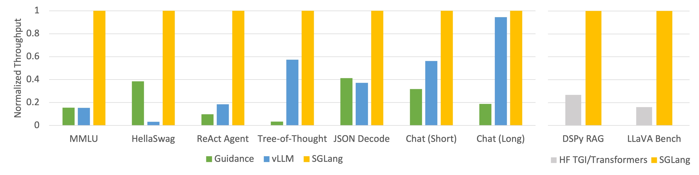
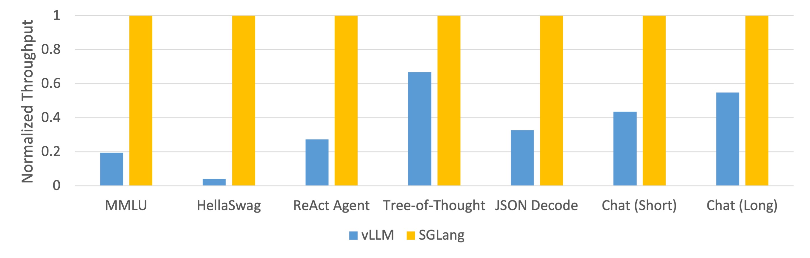
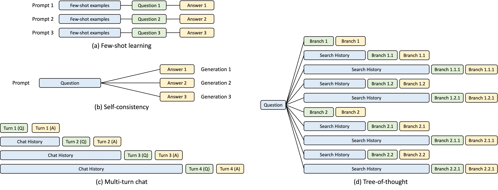
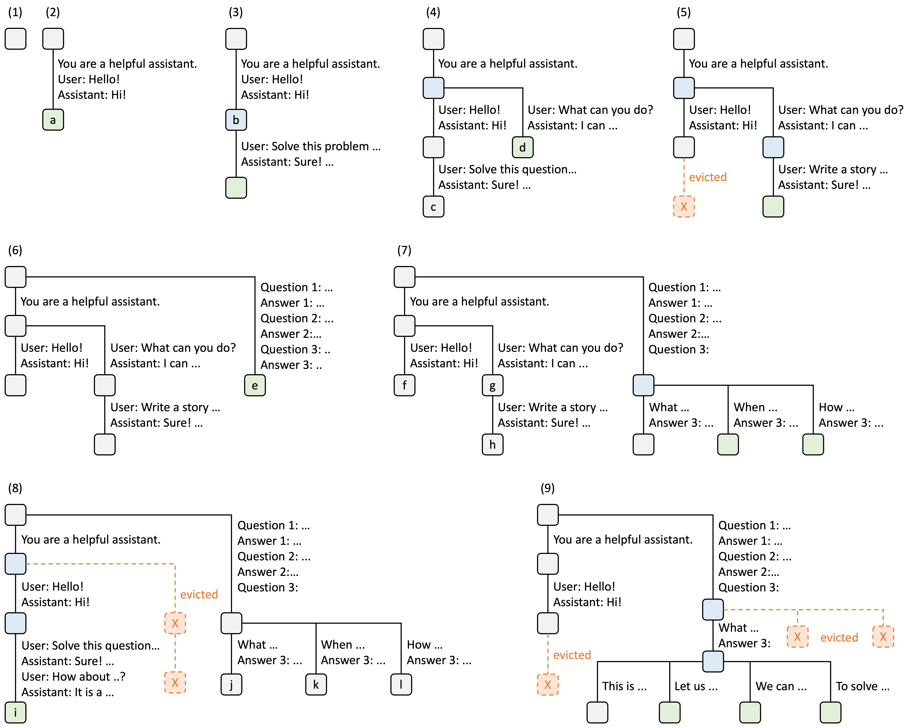
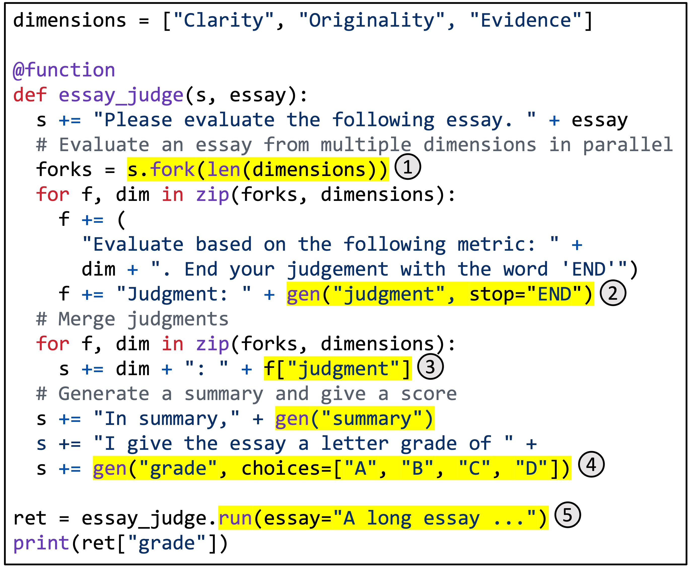

Fast and Expressive LLM Inference with RadixAttention and SGLang
On this page
Large Language Models (LLMs) are increasingly utilized for complex tasks that require multiple chained generation calls, advanced prompting techniques, control flow, and interaction with external environments. However, there is a notable deficiency in efficient systems for programming and executing these applications. To address this gap, we introduce SGLang, a Structured Generation Language for LLMs. SGLang enhances interactions with LLMs, making them faster and more controllable by co-designing the backend runtime system and the frontend languages.
- On the backend, we propose RadixAttention, a technique for automatic and efficient KV cache reuse across multiple LLM generation calls.
- On the frontend, we develop a flexible domain-specific language embedded in Python to control the generation process. This language can be executed in either interpreter mode or compiler mode.
These components work synergistically to enhance the execution and programming efficiency of complex LLM programs.
We use SGLang to implement common LLM workloads, including agent, reasoning, extraction, chat, and few-shot learning tasks, employing the Llama-7B and Mixtral-8x7B models on NVIDIA A10G GPUs. Figures 1 and 2 below demonstrate that SGLang achieves up to 5 times higher throughput compared to existing systems, namely Guidance and vLLM. We have released the code and a tech report.

Figure 1: Throughput of Different Systems on LLM Tasks (Llama-7B on A10G, FP16, Tensor Parallelism=1)

Figure 2: Throughput of Different Systems on LLM Tasks (Mixtral-8x7B on A10G, FP16, Tensor Parallelism=8)
In this blog post, we will begin by introducing the key optimizations we implemented in the backend, then move on to explaining the frontend APIs.
Backend: Automatic KV Cache Reuse with RadixAttention
During the development of the SGLang runtime, we identified a crucial optimization opportunity for complex LLM programs, which are poorly handled by current systems: KV cache reuse. KV cache reuse means different prompts with the same prefix can share the intermediate KV cache and avoid redundant memory and computation. In a complex program that involves multiple LLM calls, there can be various KV cache reuse patterns. Figure 3 below illustrates four such patterns, which are common in LLM workloads. While some systems are capable of handling KV cache reuse in certain scenarios, this often necessitates manual configurations and ad-hoc adjustments. Moreover, no existing system can automatically accommodate all scenarios, even with manual configurations, due to the diversity of possible reuse patterns.

Figure 3: KV cache sharing examples. Blue boxes are shareable prompt parts, green boxes are non-shareable parts, and yellow boxes are non-shareable model outputs. Shareable parts include few-shot learning examples, questions in self-consistency, chat history in multi-turn chat, and search history in tree-of-thought.
To systematically exploit these reuse opportunities, we introduce RadixAttention, a novel technique for automatic KV cache reuse during runtime. Instead of discarding the KV cache after finishing a generation request, our approach retains the KV cache for both prompts and generation results in a radix tree. This data structure enables efficient prefix search, insertion, and eviction. We implement a Least Recently Used (LRU) eviction policy, complemented by a cache-aware scheduling policy, to enhance the cache hit rate.
A radix tree is a data structure that serves as a space-efficient alternative to a trie (prefix tree). Unlike typical trees, the edges of a radix tree can be labeled with not just single elements, but also with sequences of elements of varying lengths. This feature boosts the efficiency of radix trees. In our system, we utilize a radix tree to manage a mapping. This mapping is between sequences of tokens, which act as the keys, and their corresponding KV cache tensors, which serve as the values. These KV cache tensors are stored on the GPU in a paged layout, where the size of each page is equivalent to one token. Considering the limited capacity of GPU memory, we cannot retain infinite KV cache tensors, which necessitates an eviction policy. To tackle this, we implement an LRU eviction policy that recursively evicts leaf nodes. Furthermore, RadixAttention is compatible with existing techniques like continuous batching and paged attention. For multi-modal models, the RadixAttention can be easily extended to handle image tokens.
The figure below illustrates how the radix tree is maintained when processing several incoming requests. The front end always sends full prompts to the runtime and the runtime will automatically do prefix matching, reuse, and caching. The tree structure is stored on the CPU and the maintenance overhead is small.

Figure 4. Examples of RadixAttention operations with an LRU eviction policy, illustrated across nine steps.
Figure 4 demonstrates the dynamic evolution of the radix tree in response to various requests. These requests include two chat sessions, a batch of few-shot learning inquiries, and a self-consistency sampling. Each tree edge carries a label denoting a substring or a sequence of tokens. The nodes are color-coded to reflect different states: green for newly added nodes, blue for cached nodes accessed during the time point, and red for nodes that have been evicted.
In step (1), the radix tree is initially empty. In step (2), the server processes an incoming user message “Hello” and responds with the LLM output “Hi”. The system prompt “You are a helpful assistant”, the user message “Hello!”, and the LLM reply “Hi!” are consolidated into the tree as a single edge linked to a new node. In step (3), a new prompt arrives and the server finds the prefix of the prompt (i.e., the first turn of the conversation) in the radix tree and reuses its KV cache. The new turn is appended to the tree as a new node. In step (4), a new chat session begins. The node ``b’’ from (3) is split into two nodes to allow the two chat sessions to share the system prompt. In step (5), the second chat session continues. However, due to the memory limit, node “c” from (4) must be evicted. The new turn is appended after node “d” in (4). In step (6), the server receives a few-shot learning query, processes it, and inserts it into the tree. The root node is split because the new query does not share any prefix with existing nodes. In step (7), the server receives a batch of additional few-shot learning queries. These queries share the same set of few-shot examples, so we split node ‘e’ from (6) to enable sharing. In step (8), the server receives a new message from the first chat session. It evicts all nodes from the second chat session (node “g” and “h”) as they are least recently used. In step (9), the server receives a request to sample more answers for the questions in node “j” from (8), likely for self-consistency prompting. To make space for these requests, we evict node “i”, “k”, and “l” in (8).
In the future, we envision advanced multi-layer storage strategies and eviction policies can be developed.
Frontend: Easy LLM Programming with SGLang
On the frontend, we introduce SGLang, a domain-specific language embedded in Python. It allows you to express advanced prompting techniques, control flow, multi-modality, decoding constraints, and external interaction easily. A SGLang function can be run through various backends, such as OpenAI, Anthropic, Gemini, and local models.

Figure 5. The implementation of a multi-dimensional essay judge in SGLang.
Figure 5 shows a concrete example. It implements a multi-dimensional
essay judge utilizing the branch-solve-merge prompting
technique. This function uses LLMs to evaluate the quality of an essay
from multiple dimensions, merges the judgments, generates a summary, and
assigns a final grade. The highlighted regions illustrate the use of
SGLang APIs. (1) fork creates multiple parallel copies of a
prompt. (2) gen invokes an LLM generation and stores the
result in a variable. The call is non-blocking so it allows multiple
generation calls to run simultaneously in the background. (3)
[variable_name] retrieves the result of the generation. (4)
choices imposes constraints on the generation. (5)
run executes a SGLang function with its arguments.
Given such an SGLang program, we can either execute it eagerly through an interpreter, or we can trace it as a dataflow graph and run it with a graph executor. The latter case opens room for some potential compiler optimizations, such as code movement, instruction selection, and auto-tuning. You can find more code examples in our GitHub repo and the details of compiler optimizations in our tech report.
The syntax of SGLang is largely inspired by Guidance. However, we additionally introduce new primitives and handle intra-program parallelism and batching. All of these new features contribute to the great performance of SGLang. You can find more examples at our Github repo.
Benchmark
We tested our system on the following common LLM workloads and reported the achieved throughput:
- MMLU: A 5-shot, multi-choice, multi-task benchmark.
- HellaSwag: A 20-shot, multi-choice sentence completion benchmark.
- ReAct Agent: An agent task using prompt traces collected from the original ReAct paper.
- Tree-of-Thought: A custom tree search-based prompt for solving GSM-8K problems.
- JSON Decode: Extracting information from a Wikipedia page and outputting it in JSON format.
- Chat (short): A synthetic chat benchmark where each conversation includes 4 turns with short LLM outputs.
- Chat (long): A synthetic chat benchmark where each conversation includes 4 turns with long LLM outputs.
- DSPy RAG: A retrieval-augmented generation pipeline in the DSPy tutorial.
- LLaVA Bench: Running LLaVA v1.5, a vision language model on the LLaVA-in-the-wild benchmark.
We tested both Llama-7B on one NVIDIA A10G GPU (24GB) and Mixtral-8x7B on 8 NVIDIA A10G GPUs with tensor parallelism, using FP16 precision. We used vllm v0.2.5, guidance v0.1.8, and Hugging Face TGI v1.3.0 as baseline systems.
As shown in Figures 1 and 2, SGLang outperformed the baseline systems in all benchmarks, achieving up to 5 times higher throughput. It also excelled in terms of latency, particularly for the first token latency, where a prefix cache hit can be significantly beneficial. These improvements are attributed to the automatic KV cache reuse with RadixAttention, the intra-program parallelism enabled by the interpreter, and the co-design of the frontend and backend systems. Additionally, our ablation study revealed no noticeable overhead even in the absence of cache hits, leading us to always enable the RadixAttention feature in the runtime.
The benchmark code is available here.
Adoption
SGLang has been used to power the serving of LLaVA online demo. It also also been integrated as a backend in DSPy. Please let us know if you have any interesting use cases!
Conclusion
As LLMs continue to evolve, they have the potential to be seamlessly integrated into complex software stacks, revolutionizing software development practices. LLMs can effectively function as intelligent library functions. To ensure their speed, flexibility, reliability, and controllability, it is crucial to co-design both the programming interfaces and the runtime systems for LLM-based functions and programs. SGLang represents our initial step towards achieving this goal. We invite the community to try SGLang and provide us with feedback.
Links
Code: https://github.com/sgl-project/sglang/
Paper: https://arxiv.org/abs/2312.07104
Acknowledgement
This project would not have been possible without the incredible open-source community. We gained insights from the designs and even reused some code from the following projects: Guidance, vLLM, LightLLM, FlashInfer, Outlines, LMQL.
We thank Zihao Ye, Haotian Liu, Omar Khattab, Christopher Chou, and Wei-Lin Chiang for their early feedback.
Citation
@misc{zheng2023efficiently,
title={Efficiently Programming Large Language Models using SGLang},
author={Lianmin Zheng and Liangsheng Yin and Zhiqiang Xie and Jeff Huang and Chuyue Sun and Cody Hao Yu and Shiyi Cao and Christos Kozyrakis and Ion Stoica and Joseph E. Gonzalez and Clark Barrett and Ying Sheng},
year={2023},
eprint={2312.07104},
archivePrefix={arXiv},
primaryClass={cs.AI}
}